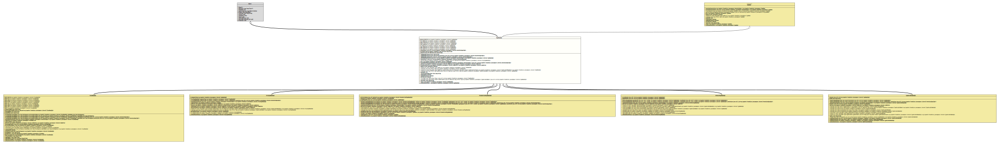

Class TypeNameImpl
java.lang.Object
org.tquadrat.foundation.javacomposer.internal.TypeNameImpl
- All Implemented Interfaces:
TypeName
- Direct Known Subclasses:
ArrayTypeNameImpl,ClassNameImpl,ParameterizedTypeNameImpl,TypeVariableNameImpl,WildcardTypeNameImpl
@ClassVersion(sourceVersion="$Id: TypeNameImpl.java 1085 2024-01-05 16:23:28Z tquadrat $")
@API(status=INTERNAL,
since="0.0.5")
public sealed class TypeNameImpl
extends Object
implements TypeName
permits ArrayTypeNameImpl, ClassNameImpl, ParameterizedTypeNameImpl, TypeVariableNameImpl, WildcardTypeNameImpl
The implementation of
TypeNameImpl
as representation of any type in Java's type system, plus void.- Author:
- Square,Inc.
- Modified by:
- Thomas Thrien (thomas.thrien@tquadrat.org)
- Version:
- $Id: TypeNameImpl.java 1085 2024-01-05 16:23:28Z tquadrat $
- Since:
- 0.0.5
- UML Diagram
-

UML Diagram for "org.tquadrat.foundation.javacomposer.internal.TypeNameImpl"
{kind=link}
-
Field Summary
FieldsModifier and TypeFieldDescriptionstatic final TypeNameImplThe type name forboolean.static final TypeNameImplThe type name forbyte.static final TypeNameImplThe type name forchar.static final TypeNameImplThe type name fordouble.static final TypeNameImplThe type name forfloat.static final TypeNameImplThe type name forint.static final TypeNameImplThe type name forlong.private final List<AnnotationSpecImpl> The annotations for this type.Lazily initialised return value oftoString()of this type name.The name of this type if it is a keyword.static final TypeNameImplThe type name forshort.static final TypeNameImplThe type name forvoid. -
Constructor Summary
ConstructorsConstructorDescriptionTypeNameImpl(String keyword) Creates a newTypeNameImplinstance.TypeNameImpl(String keyword, List<AnnotationSpecImpl> annotations) Creates a newTypeNameImplinstance.TypeNameImpl(List<AnnotationSpecImpl> annotations) Creates a newTypeNameImplinstance. -
Method Summary
Modifier and TypeMethodDescriptionannotated(List<AnnotationSpec> annotations) Creates a new instance for an implementation ofTypeNameas a copy of this one, but with the given annotations added.final List<AnnotationSpecImpl> Returns the annotations for this type name.static final Optional<ArrayTypeNameImpl> Returns the given type name as an array; the return value is empty if it is not an array.final TypeNameImplbox()protected final List<AnnotationSpecImpl> concatAnnotations(Collection<AnnotationSpec> annotations) Combines the annotations of this instance with the given ones.emit(CodeWriter out) Emits this type name instance to the givenCodeWriter.protected final CodeWriterEmits the annotation from this type name instance to the givenCodeWriter.final booleanstatic final TypeNameImplReturns a type name equivalent to that of the givenTypeinstance.static final TypeNameImplfrom(Type type, Map<Type, TypeVariableName> typeVariables) Returns a type name equivalent to that of the givenTypeinstance.static final TypeNameImplfrom(TypeMirror mirror) Returns a type name equivalent to that from the givenTypeMirrorinstance.static final TypeNameImplfrom(TypeMirror mirror, Map<TypeParameterElement, TypeVariableNameImpl> typeVariables) Returns a type name equivalent to that from the givenTypeMirrorinstance.final inthashCode()private final StringThe initializer form_CachedString.booleanChecks whether this type name is annotated.final booleanChecks whether this type name represents a box primitive type.final booleanChecks whether this type name represents a primitive type.static final List<TypeNameImpl> Converts an array of types to a list of type names.static final List<TypeNameImpl> list(Type[] types, Map<Type, TypeVariableName> typeVariables) Converts an array of types to a list of type names.final StringtoString()final TypeNameImplunbox()Creates a new instance for an implementation ofTypeNameas a copy of this one, but without any annotations.
-
Field Details
-
BOOLEAN_PRIMITIVE
The type name forboolean. -
BYTE_PRIMITIVE
The type name forbyte. -
CHAR_PRIMITIVE
The type name forchar. -
DOUBLE_PRIMITIVE
The type name fordouble. -
FLOAT_PRIMITIVE
The type name forfloat. -
INT_PRIMITIVE
The type name forint. -
LONG_PRIMITIVE
The type name forlong. -
SHORT_PRIMITIVE
The type name forshort. -
VOID_PRIMITIVE
The type name forvoid. -
m_Annotations
The annotations for this type. -
m_CachedString
Lazily initialised return value oftoString()of this type name. -
m_Keyword
The name of this type if it is a keyword.
-
-
Constructor Details
-
TypeNameImpl
Creates a newTypeNameImplinstance.- Parameters:
keyword- The name of this type if it is a keyword,nullotherwise.
-
TypeNameImpl
Creates a newTypeNameImplinstance.- Parameters:
keyword- The name of this type if it is a keyword,nullotherwise.annotations- The annotations for this type name.
-
TypeNameImpl
Creates a newTypeNameImplinstance.- Parameters:
annotations- The annotations for this type name.
-
-
Method Details
-
annotated
Creates a new instance for an implementation ofTypeNameas a copy of this one, but with the given annotations added. -
annotations
Returns the annotations for this type name.- Returns:
- The annotations.
-
asArray
Returns the given type name as an array; the return value is empty if it is not an array.- Parameters:
type- The type name.- Returns:
- An instance of
Optionalthat holds the array type name.
-
box
Returns a boxed type if this is a primitive type (likeIntegerforint) orvoid. Returns this type if boxing doesn't apply. -
concatAnnotations
Combines the annotations of this instance with the given ones.- Parameters:
annotations- The annotations to add.- Returns:
- The combined list of annotations.
-
emit
Emits this type name instance to the givenCodeWriter.- Parameters:
out- The code writer.- Returns:
- The code writer.
- Throws:
UncheckedIOException- Something went wrong when emitting to the output target.
-
emitAnnotations
Emits the annotation from this type name instance to the givenCodeWriter.- Parameters:
out- The code writer.- Returns:
- The code writer.
- Throws:
UncheckedIOException- Something went wrong when emitting to the output target.
-
equals
-
from
Returns a type name equivalent to that from the givenTypeMirrorinstance.- Parameters:
mirror- The given type mirror instance.- Returns:
- The respective type name.
-
from
Returns a type name equivalent to that of the givenTypeinstance.- Parameters:
type- The type.- Returns:
- The respective type name for the given
Typeinstance.
-
from
@API(status=MAINTAINED, since="0.2.0") public static final TypeNameImpl from(TypeMirror mirror, Map<TypeParameterElement, TypeVariableNameImpl> typeVariables) Returns a type name equivalent to that from the givenTypeMirrorinstance.- Parameters:
mirror- The given type mirror instance.typeVariables- The type variables.- Returns:
- The respective type name.
-
from
@API(status=MAINTAINED, since="0.2.0") public static final TypeNameImpl from(Type type, Map<Type, TypeVariableName> typeVariables) Returns a type name equivalent to that of the givenTypeinstance.- Parameters:
type- The type.typeVariables- The type variables.- Returns:
- The respective type name for the given
Typeinstance.
-
hashCode
-
initialiseCachedString
The initializer form_CachedString.- Returns:
- The return value for
toString().
-
isAnnotated
Checks whether this type name is annotated.- Specified by:
isAnnotatedin interfaceTypeName- Returns:
trueif it is annotated,falseotherwise.
-
isBoxedPrimitive
Checks whether this type name represents a box primitive type.- Specified by:
isBoxedPrimitivein interfaceTypeName- Returns:
trueif this is a boxed primitive type likeInteger.falsefor all other types including unboxed primitives andVoid.
-
isPrimitive
Checks whether this type name represents a primitive type.- Specified by:
isPrimitivein interfaceTypeName- Returns:
trueif this is a primitive type likeint.falsefor all other types including boxed primitives andvoid.
-
list
Converts an array of types to a list of type names.- Parameters:
types- The types.- Returns:
- The type names.
-
list
Converts an array of types to a list of type names.- Parameters:
types- The types.typeVariables- The type variables.- Returns:
- The type names.
-
toString
-
unbox
Returns an unboxed type if this is a boxed primitive type (likeintforInteger) orVoid. Returns this type if it is already unboxed. -
withoutAnnotations
Creates a new instance for an implementation ofTypeNameas a copy of this one, but without any annotations.- Specified by:
withoutAnnotationsin interfaceTypeName- Returns:
- The new instance.
-